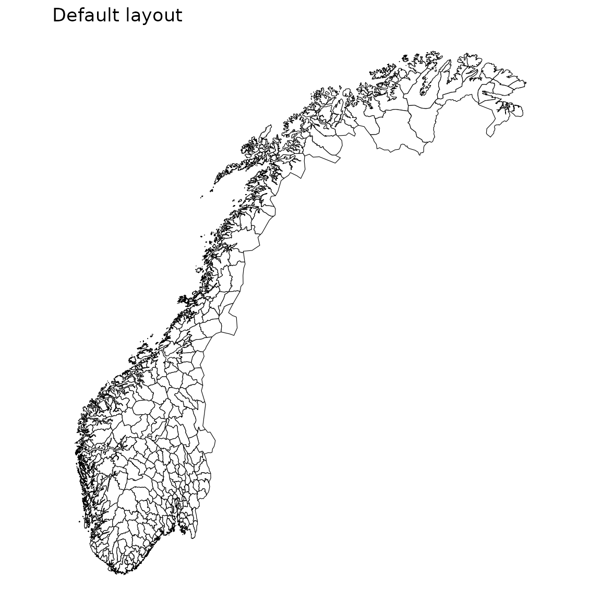

csmaps ships the geometry of Norway as plain
data.table objects, so you can draw choropleth maps with
ggplot2 alone, without sf, GDAL, or any other geo-library.
It is part of the Core
Surveillance family of R packages, and covers counties,
municipalities, and Oslo’s city wards across four redistricting years
(2017, 2019, 2020, and 2024).
A first map
Every map is a data.table of polygon coordinates, so you
can hand it straight to geom_polygon(). Here is the
municipality map for the 2024 borders:
pd <- copy(csmaps::nor_municip_map_b2024_default_dt)
q <- ggplot()
q <- q + geom_polygon(
data = pd,
aes(
x = long,
y = lat,
group = group
),
color="black",
fill="white",
linewidth = 0.2
)
q <- q + theme_void()
q <- q + coord_quickmap()
q <- q + labs(title = "Default layout")
q
The same code draws the counties; only the dataset changes:
pd <- copy(csmaps::nor_county_map_b2024_default_dt)
q <- ggplot()
q <- q + geom_polygon(
data = pd,
aes(
x = long,
y = lat,
group = group
),
color="black",
fill="white",
linewidth = 0.4
)
q <- q + theme_void()
q <- q + coord_quickmap()
q <- q + labs(title = "Default layout")
q
Where to next
For a split north/south view or an inset that enlarges Oslo, see the layout vignette. To shade regions by your own numbers, see customization. The full list of datasets lives in the reference.